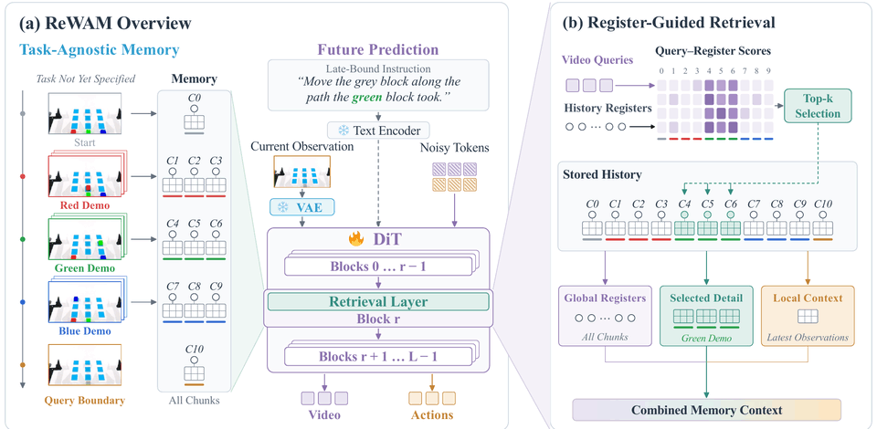
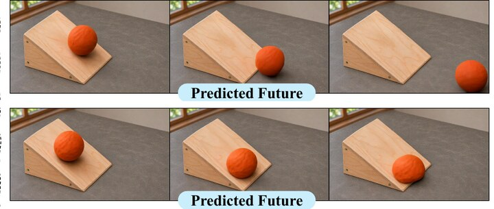
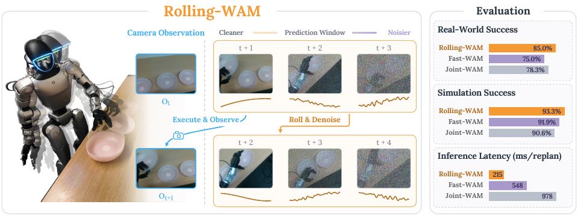
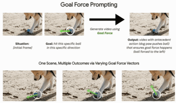

|
Yinghua Zhou
Welcome! I am currently a CS master's student at Brown University.
I am interested in Embodied Intelligence, particularly large foundation models for generalist robot learning. I also enjoy working on Video Generation.
Prior to Brown, I completed my B.S. in Computer Science at Monash University and received my (first class) Honours degree in Computer Science from The University of Sydney.
“Seeing beyond the surface”
Contact: zyinghua [at] brown [dot] edu
Github /
LinkedIn /
X
|
|
|

|
MOSAIC: Benchmarking Late-Bound Robotic Manipulation
Tingyi Yang*,
Yinghua Zhou*,
Hao Gu,
Hao Dong,
Charles C Ochoa,
Rowan Thomas McAllister,
Maulik Bhatt,
Thang Vu,
Igor Vasiljevic,
Vitor Campagnolo Guizilini†,
Junjie Ye†,
Yue Wang†
We formulate late-bound robotic manipulation and develop the MOSAIC benchmark and ReWAM framework for instruction-conditioned sparse memory retrieval.
|
|

|
Experience Prompting: In-context Adaptation to Object Physics in Video Models
Zitian Tang,
Jerry Xia,
Yinghua Zhou,
Evan Luo,
Maria Yan Ma,
Adwith Mukherjee,
Zilai Zeng,
Nate Gillman,
Charles Herrmann,
Chen Sun
We study test-time physics adaptation and introduce an in-context learning video generation model that adapts physical properties from references.
|
|

|
Rolling-WAM: World Action Models with Rolling Imagination
Yinghua Zhou*,
Junjie Ye*,
Yiqi Zhao,
Hao Dong,
Celina Shiyu Wang,
Ruohai Ge,
Tingyi Yang,
Basile Van Hoorick,
Gaurav Sukhatme,
Vitor Guizilini†,
Yue Wang†
arXiv, 2026
CoRL EEAI Workshop, 2026 Oral
project page
/
arXiv
/
code
Rolling-WAM distributes joint video-action denoising across a rolling prediction window, enabling faster inference while maintaining strong task performance.
|
|

|
Goal Force: Teaching Video Models To Accomplish Physics-Conditioned Goals
Nate Gillman,
Yinghua Zhou,
Zitian Tang,
Evan Luo,
Arjan Chakravarthy,
Daksh Aggarwal,
Michael Freeman,
Charles Herrmann,
Chen Sun
CVPR, 2026
project page
/
arXiv
/
code
Goal Force specifies visual goals for video world models via explicit force vectors; trained only on synthetic causal primitives, it generalizes zero-shot to real-world scenes as an implicit neural physics simulator.
|
|